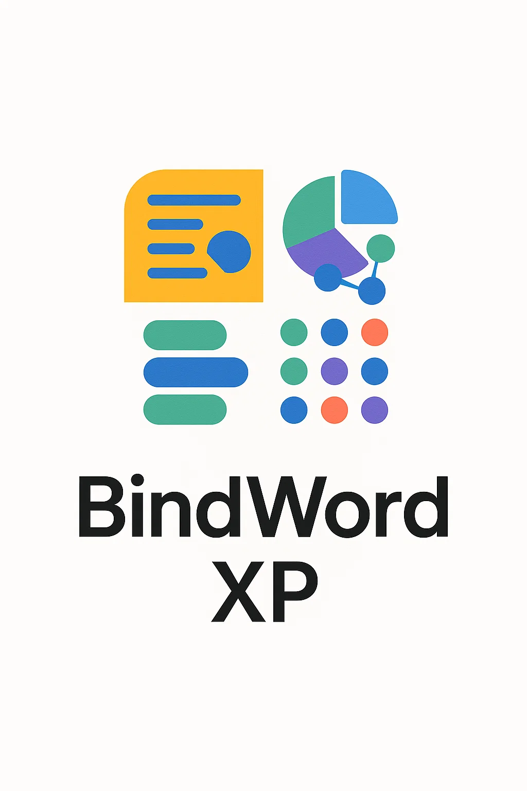

BindWord XP — это интеллектуальная среда нового поколения для удобного, интуитивного и глубокого анализа текстов. Наше приложение объединяет визуальную простоту, технологичность и высокую адаптивность под потребности пользователя. Это незаменимый помощник в исследовательской и прикладной работе с текстами различной сложности.
BindWord XP — это программное решение, ориентированное на эффективную работу с текстовой информацией. В основе проекта лежит идея создания интерфейса, который бы делал сложный анализ доступным и понятным даже для неподготовленного пользователя.
Приложение визуализирует ключевые аспекты текста: выделяет тематические блоки, группирует понятия, демонстрирует частотные связи и многое другое. Особое внимание было уделено удобству, адаптивности и визуальной согласованности — чтобы каждая функция была легко доступна, а результаты анализа воспринимались интуитивно и наглядно.
BindWord XP разрабатывался с упором на расширяемость и модульность, что делает возможным дальнейшее развитие и интеграцию новых подходов обработки естественного языка (NLP).
Пост 1: Идея
Мы начали с простой мысли — анализ текста должен быть не только точным, но и красивым. Так родилась концепция интерфейса, который не пугает, а ведёт пользователя за руку.
Пост 2: Первые прототипы
Разработаны базовые элементы дизайна: панели управления, вкладки, блоки результатов. Создана система адаптивного отображения данных, которая сохраняет структуру текста и одновременно делает акценты на важных местах.
Финальная интеграция
Объединение интерфейса с аналитическими модулями стало финальной стадией. Мы провели пользовательское тестирование и внедрили механизмы визуальной фильтрации, упрощающие работу с большими объёмами текста.